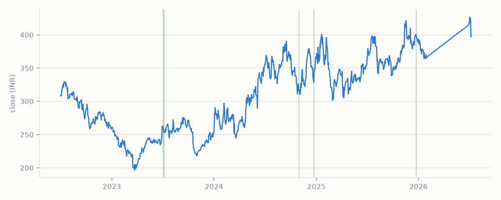

obscura
·
intel
Live feed
Tickers
Methodology
About
Pharmaceuticals & Drugs
Biocon Ltd
BIOCON

Events detected
5
Most recent
2025-12-24
Max intensity
97.5
th pct
Event history
Date
Direction
Intensity
Novelty
2025-12-24
+ tone
93.8th pct
365
2024-12-24
+ tone
65.7th pct
54
2024-10-31
+ tone
76.0th pct
483
2023-07-06
+ tone
64.0th pct
2
2023-07-04
+ tone
97.5th pct
first seen